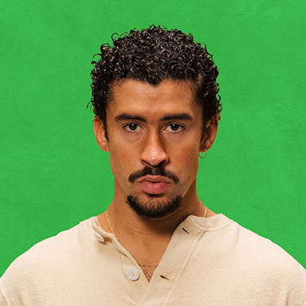
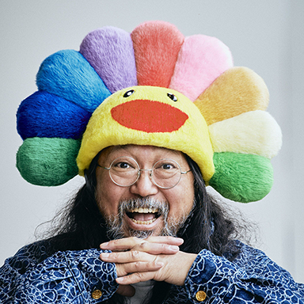
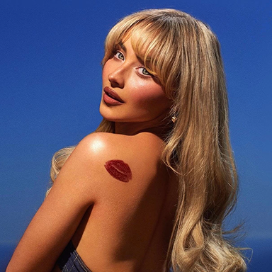

home
inspo
top fives
andrea ochoa
these are a few artists who inspire me
Bad Bunny

I find Bad Bunny very inspiring because he is prideful about his culture and uses his platform to shed light to the
injustices that his Puerto Rican community faces.
Takashi Murakami

Takashi's art style is very playful and colorful which is what I find most intriguing. Being able to be recognizable
globally and established in the art, music and fashion industries are huge accomplishments.
Sabrina Carpenter

What I find most inspiring is when artist create a little theme surrounding each album. In Sabrina's new album she
uses pastels as her color palette and uses her song "Espresso" to collaborate with big brands.